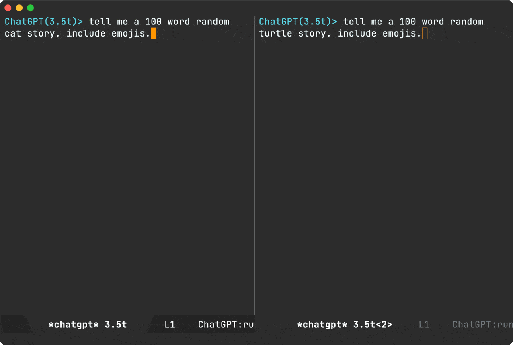
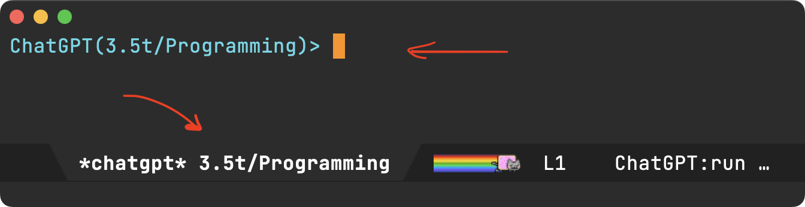
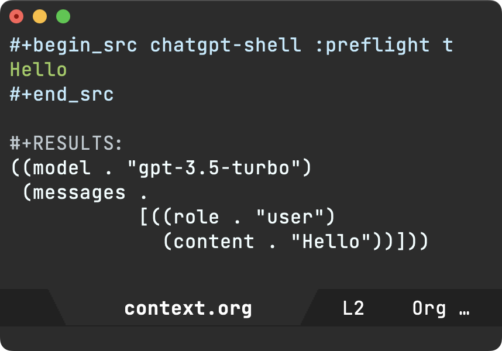
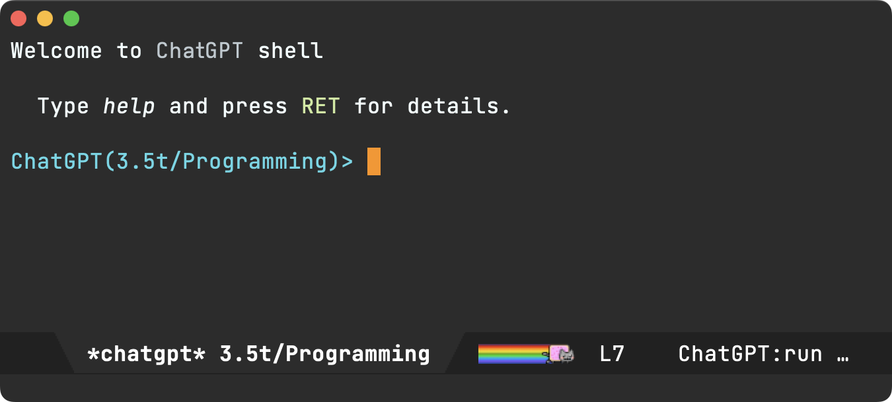
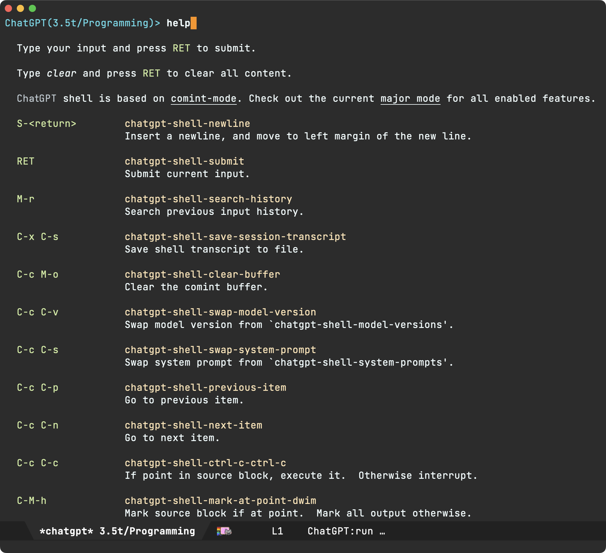
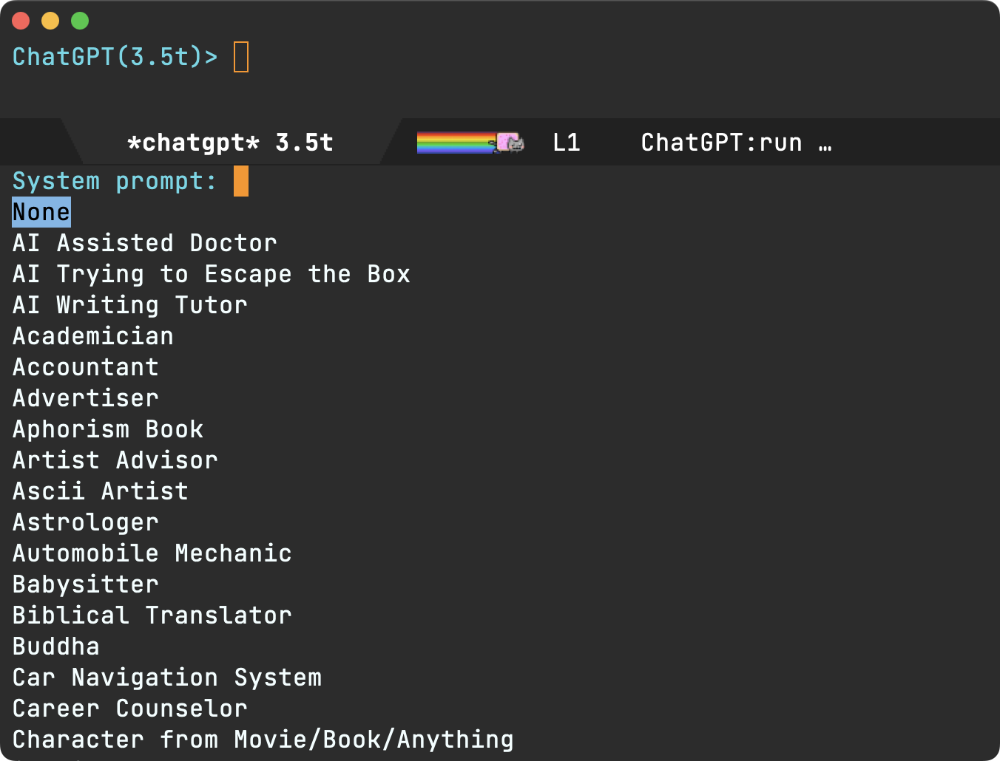

Álvaro Ramírez
chatgpt-shell v0.60.1 updates
Back in April, I shared chatgpt-shell updates, showcasing chatgpt-shell features. It's been a little while, so here's an update with the latest additions.
Like this project? Consider ✨sponsoring✨.
Multi-session support
You can run multiple shell instances independently configured to use different versions or system prompts.
This was biggest recent change. Please report issues.

Display system prompt and version
The current shell's version and system prompt are now displayed more prominently in both the shell prompt and buffer name.

With multi-session support, displaying shell details in the buffer name becomes more important as it makes it easier shells across your buffer list.
Rename shell buffers
While buffer names are now automatically derived, one can also use chatgpt-shell-rename-buffer to use custom buffer names.
ob-chatgpt-shell improvements
Use :temperature to specify the temperature.
Use :context CONTEXT-NAME to pick and choose which source blocks to aggregate as context. Thank you Thomas Moulia.
Use :preflight t to debug ob-chatgpt-shell execution.

chatgpt-shell-write-git-commit
Adds chatgpt-shell-write-git-commit, so you can generate commit messages using the current region. Thank you Simon Judd.
Approximate context length
chatgpt-shell now uses chatgpt-shell--approximate-context-length to approximate the context size and discard history if necessary. This is pretty experimental but seems to work well enough. It's enabled by default to get some feedback. Please file bugs if needed or send PRs to improve.
S-<return> for multiline input
In addition to C-J to insert multi-line input, S-<return> is also supported. Thank you shouya for the submission.
Welcome message
A welcome message now makes the help much more discoverable for new or sporadic users. Thank you shouya for the suggestion.

Help me
While the README documents the shells and Emacs is self-documenting, we now have a help command to make things a little more discoverable.

Hello chatgpt-shell-mode and dall-e-shell-mode
Both chatgpt-shell and dall-e-shell are both based on shell-maker and until recently both shared shell-maker-mode as their major mode. This didn't play well with yasnippet. Both shells now enable independent major modes: chatgpt-shell-mode and dall-e-shell-mode. Thank you Daniel Liden for the proposal.
Saving transcript customizations
Make transcript saving more customizable via shell-maker-transcript-default-path and shell-maker-transcript-default-filename. Thank you gnusupport.
New ChatGPT model versions
New OpenAI model versions were recently released and added to chatgpt-shell: gpt-3.5-turbo-0613 and gpt-4-0613. Thanks you Norio Suzuki.
Load awesome prompts
M-x chatgpt-shell-load-awesome-prompts to download and import curated prompts from awesome-chatgpt-prompts. Thank you Daniel Gomez.

ob-async
We had reports that ob-chatgpt-shell didn't play nice with ob-async. Thank you William Medrano for the solution.
Configurable prompts
Functions like chatgpt-shell-describe-code ask ChatGPT to describe the code in region. These functions used to be hardcoded English prompts. These are now configurable, so users can tweak or translate if preferred. Thank you Norio Suzuki.
chatgpt-shell-prompt-header-describe-codechatgpt-shell-prompt-header-refactor-codechatgpt-shell-prompt-header-generate-unit-testchatgpt-shell-prompt-header-proofread-regionchatgpt-shell-prompt-header-whats-wrong-with-last-commandchatgpt-shell-prompt-header-eshell-summarize-last-command-output